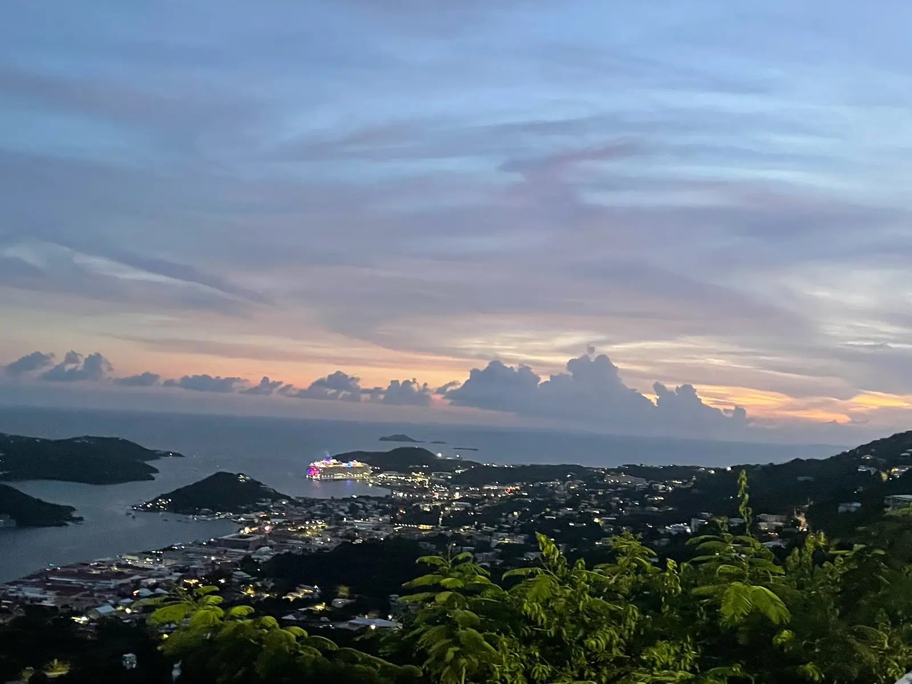

Havensight / WICO pickup
Meet your Top Dog driver at China King, directly across from the Havensight cruise port.
Havensight pickup guide
Havensight · Crown Bay · St. Thomas shore excursions
Skip the shared taxi line and reserve private transportation for your party. Book beach rides, shopping, restaurants, scenic overlooks or a flexible St. Thomas island tour built around your ship’s time in port.
Where to meet your driver
Send your ship name and arrival date. We will confirm the dock and pickup time before your ride.
Meet your Top Dog driver at China King, directly across from the Havensight cruise port.
Havensight pickup guideMeet your Top Dog driver at Scoops & Brews near the Crown Bay cruise port.
Crown Bay pickup guideCruise-day transportation
Popular options for Carnival, Royal Caribbean, Norwegian, Disney, Celebrity, MSC, Princess, Virgin Voyages, Holland America and other cruise guests visiting St. Thomas. Top Dog is an independent local transportation provider and is not affiliated with any cruise line.
Today’s arrivals
VI Now publishes the current U.S. Virgin Islands cruise schedule and identifies WICO/Havensight and Crown Bay arrivals. Schedules can change, so confirm your ship and dock before pickup.
View cruise schedule guideRead Top Dog Tour & Taxi reviews on Google, then message us with your ship, dock, party size and plans.
Read Google reviewsCruise pickup FAQ
Yes. Top Dog provides independent private transportation for Carnival passengers and guests from other cruise lines at Havensight/WICO and Crown Bay.
Your driver waits and stays in contact with you. Send a message as soon as you have service.
Yes. Share your beach, passenger count, preferred pickup time and all-aboard time so a safe return window can be planned.
No. Your reservation is private for you and your party.
Send your ship, date, dock, passenger count, destinations and all-aboard time.